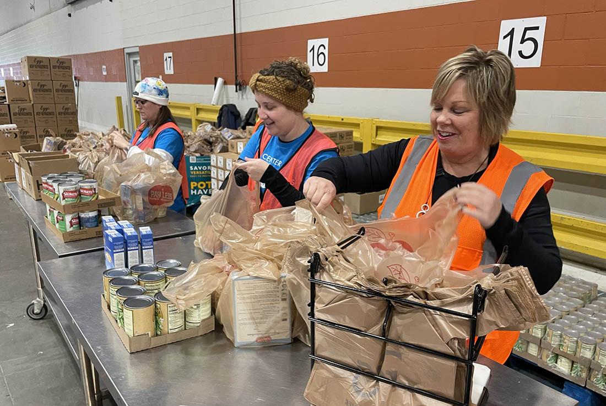

📅 May 21, 2025
⏰ Time: 9:00 AM – 5:00 PM
📍 Location: Newtownards
🎟️ Admission: FREE (Donations encouraged!)
Join us in volunteering at our local food bank! Your help will provide essential meals to those in need, making a real impact in our community. Whether sorting donations or packing food, every effort counts. Come lend a hand and help fight hunger!
Join us for a meaningful day of volunteering at the food bank, where you can help make a real difference. Activities include:
🍞 Sorting and packaging food donations for families in need
🎉 Community-building activities and opportunities to meet like-minded volunteers
💛 All your efforts directly support local families struggling with food insecurity
👨👩👧👦 Family-friendly volunteer opportunities with tasks for all ages
Why volunteer?
Make a positive impact while giving back to your community.
Meet new people and be part of a supportive, caring group.
Every hour of your time helps provide meals for those in need!